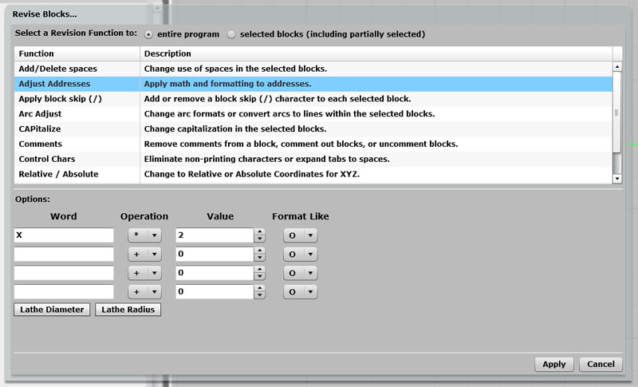
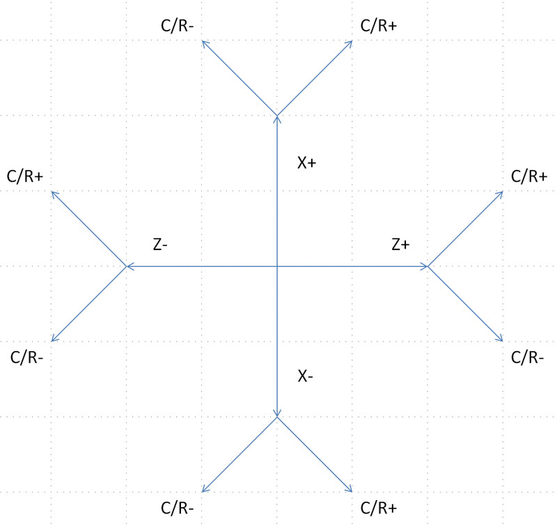
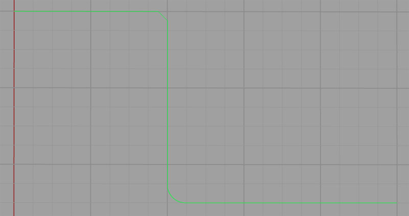

CNC Lathe Axes
CNC Lathes come in a variety of configurations, but for the basics, we'll stick to the simplest and most common setup--2 axes.
Simple CNC Lathes use a Z-axis, which is parallel to the spindle axis, and an X-axis, which is at right angles to the spindle. In G-Wizard Editor/Simulator, the display looks like this:

X-Axis runs top to bottom while Z-axis runs left and right...
The G-Wizard Editor will automatically switch its axis display when you change the machine type from mill to lathe and vice versa.
The next step up from a 2-axis lathe would be a 3-axis lathe. Rather than add the Y-axis, a 3-axis lathe typically has X, Z, and C axes. C is a rotary axis parallel to the spindle axis and Z. In essence, it allows you to clock the spindle to specific angles. A three axis lathe with live toolign can do fairly arbitrary milling jobs on the part in the lathe chuck. We won't spend any more time talking about C-axis programming in this section because it's beyond the scope of a simple introduction to CNC turning.
Diameter Versus Radius Mode
Your CNC lathe's controller will be setup to start in either diameter or radius mode. In diameter mode, X-axis values specify diameters, while in radius mode, they specify a radius from the axis. As you would expect, diameter mode X-axis values are exactly twice what the radius mode values are, so it is important that you know which mode your lathe is using.
G-Wizard Editor has a revision command that lets you change programs back and forth between diameter and radius mode:

Lathe diameter mode is simple: multiply all the X's by 2...
As you can see, it ain't rocket science--we use the Adjust Addresses Revision to multiply all the X's by 2.
Some machines may also have the ability to change between radius and diameter mode using special g-codes. You can set whether GW Editor defaults to radius or diameter in the post too.
Many machines also implement a gcode that lets you switch back and forth:
- G190: Radius mode.
- G191: Diameter mode.
Basic G01 and G02/03 Moves: Lines and Arcs
The CNC Lathe can make the same basic moves as the mill--G01 for lines and G02/03 for arcs (plus G00 for rapid motion in a straight line). The difference is you can mostly ignore the Y coordinate (though there are lathes that have Y too!). Just leave it out of the programs, and don't use the corresponding incremental "J" or "V" either.
Once you get used to it, lathe programming is quite a bit easier than mill programming. You are typically trying to create a profile of some kind. If your lathe has sophisticated canned cycles like G71 Rough Turning, this can be particularly easy, but even programming by hand isn't too bad.
Part Zero on CNC Turning Programs
It's worth putting a little thought into where you'd like to put part zero on a turning program. The X-axis zero is always chosen to be the spindle center line when turning for all sorts of reasons.
For the Z-axis zero, there are three popular spots to choose from:
- Chuck face: The only advantage to this method is it is very each to touch the chuck face. But, the part is rarely against the chuck face, so this method introduces more complications in locating positions on the actual part.
- Chuck jaw face: This one is a little better, as it is both easy to measure and will also establish part zero at the end of the part that is pressed firmly against the jaw face. But, we can do even better.
- End of finished part: This is the most popular approach, the reason being a lot of parts have to be flipped in the chuck and machined on both ends. The disadvantage is that when machining starts, there is no finished part to touch off. Machinists typically use an allowance, or make a quick facing cut to create the finished end to get past that problem.
Tool Changes and Tool Selection on the CNC Lathe
There are a couple of differences between typical CNC Lathe tool changes and Mill tool changes. First, the lathe uses no M06 command--the tool is changed as soon as the "T" word is executed. Second, many lathes encode a tool wear offset into the address following the "T" word:
Tttww
In the example "tt" signifies the tool number and "ww" signifies the wear offset. Different controls may be set up with differing numbers of digits to select the tool and wear offset.
CNC Lathes are set up this way so that each tool can have more than one wear offset. This is done because turning work often needs to be to very tight tolerances, and the same tool is often used for multiple features on the part. By using a different wear offset for each feature, the machinist can measure the parts as they come off and tweak the wear offset so each feature is to the specified tolerances.
This all assumes your lathe has a tool turret. It may not--some lathes use Gang Tooling. It's beyond the scope of this intro chapter, but gang tooling will be covered in a later article. Suffice to say that with gang tooling, the tools are mounted on the slide and the program selects the tool by explicitly programming slide motions on the X and Z axes.
Automatic Chamfer and Corner Rounding with G01
When facing and turning at 90 degrees to one another, you'll get very sharp edges. It's very common for drawings to specify that these edges are to be broken with a chamfer or radius. Many controls provide a feature for just that purpose called automatic chamfer and automatic corner rounding. Once you get used to it, it's a very handy feature to have, but it takes a little getting used to how to set it up. I prefer to use "C" or "R" rather than I and K, so that's what I will explain here. We'll use this little chart:

To use the automatic corner break feature, the G01 must move in only one axis--X or Z. Using the chart, choose which axis is moving and in what direction. For each axis and direction, there are two possible chamfers (or corner radii). Choose the one you want and that tells you the sign of the value. The "radius" is the amount of the value. Use the "C" word for a chamfer and the "R" word for a radius.
Let's try an example. Say we are moving up in X (so X+) and on our next move we'll go left in Z (Z-). Looking at the chart, we go up (X+) and then we want the "C/R-" branch. So, to give a chamfer, we use C-0.05 for an 0.05" chamfer. For a radius, we use R-0.05 for an 0.05 radius.
Here's another trick: if you're programming in GWE, just try out positive first and you can see whether it goes the right way. Switch to negative if it doesn't. That lets you dispense with the chart.
Okay, let's go over the example from the top of page screen shot. Here's the g-code:
N001 G18
N002 G00 X5 Z5
N003 G01 Z2 R0.236
N004 X10 C-0.118
N005 Z0
And here is the backplot from GWE:

G01 Automatic Chamfer and Corner Rounding Example...
Line N003 is a move purely in Z from right to left. We want to put a clockwise arc in with radius 0.236. Looking at the diagram, that means we want a positive R, so we use R0.236.
Next up is a chamfer at line N004. In this case, the chart tells us we need a negative "C", so we use C-0.118. Each side of the triangle with chamfer as hypotenuse is 0.118".
It's easy, try some examples yourself!
Exercises
1. If you don't already have GWE, take a moment now to sign up. It's free for at least 30-days and while in Beta test. We'll be using it for many of the exercises on each section of this course.
2. Review your CNC Lathe's programming manual and get used to how it's axes work.
3. Find out whether your lathe starts up in Diameter or Radius mode.
4. Using GWE, write some simple lathe programs that turn some simple profiles.
5. Modify the program you wrote in #4 to use the automatic corner break function and include both chamfers and radiused corners.
6. Review whether your CNC lathe's control has automatic chamfer and corner rounding available.
Try the Free Trial Version of G-Wizard G-Code Editor...

No credit card required--just your name and email.
Next Article: Relative vs Absolute Moves